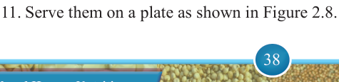

38


Food and Human Nutrition

Form Two
Recipes for making different dishes using flour
Different types of flour are used for making a variety of dishes such as Chelsea buns, porridge, maize sweet, rice bread, digestive biscuits and chocolate corn flour mould.
Note that, high consumption of dishes containing sugar and fats increases the risk of overweight, obesity and dental problems. Consider reducing these nutrients in your meals for better health.
Chelsea buns
Ingredients (serve 4 people)
250 g wheat flour
2 g salt
125 mls milk or water
85 g raisins
2 g yeast
50 g margarine
56 g sugar
Method
1. Grease a baking tin.
2. Sieve the flour into a bowl. Add sugar, yeast and salt then mix well. Rub in
20 g of margarine.
3. Pour warm milk into the flour and mix them well.
4. Knead to make smooth and elastic dough.
5. Cover it with a damp cloth and leave it in a warm place.
6. When doubled in size, re-knead it and prove for 20 minutes.
7. Roll the dough. Then, brush it with 30 g of fat and sprinkle the sugar and raisins on its top.
8. Roll up as for Swiss roll and cut it into thick slices.
9. Place them close to each other in a greased baking tin.
10. Leave them to stand in a warm place for 15 minutes then bake them in a pre- heated oven at a temperature between 150°C and 170°C for 15 ‒ 20 minutes.
11. Serve them on a plate as shown in Figure 2.8.

17/09/2025 16:30